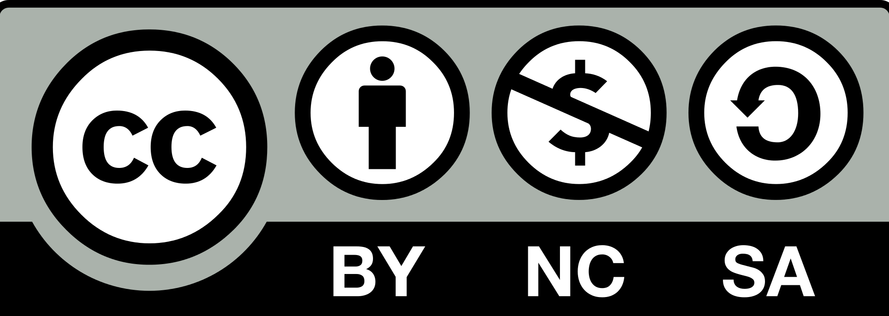

Texto
Esta situación de aprendizaje está creada para que todos y todas podamos disfrutar de aprender y sintamos que nuestras necesidades individuales están siendo atendidas. Se trata de que todos adquiramos los conocimientos y las competencias a nuestro ritmo y según nuestras características, convirtiéndose en un aprendizaje significativo en nuestras vidas.
Para ello la presentación de contenidos se realizará por distintos medios para poder captar la atención y el interés de todo el alumnado.
Los contenidos se presentan en los siguientes medios:
Ambientación del aula.
Láminas de dibujo en el aula.
Explicación oral del maestro.
Vídeos explicativos.
Lecturas.
Experimentación.
Representación.
En la parte de evaluación se ofrecerán distintos recursos al alumnado para que pueda desarrollar sus conocimientos y sus competencias de la mejor manera posible.
Agrupamientos flexibles que se adapten a las necesidades de cada uno de los alumnos y alumnas.
Actividades adaptadas atendiendo a las necesidades del alumnado:
-Posibilidad de presentar el producto final en formato papel o cartulina.
-Posibilidad de hacer los formularios escritos en papel.
- Apoyo visual en los formularios para aquellos niños y niñas que lo necesiten.
Actividades de ampliación:
Visionado de vídeos explicativos que profundizan sobre el tema.
https://www.youtube.com/watch?v=3kmRmzTh1Ck
Búsqueda en la Biblia de las citas bíblicas que hablan sobre el Bautismo y sus lecturas.
Ampliamos nuestro conocimiento sobre el bautismo y otros sacramentos con el Escape Room de Genially preparado por Ana C. Reli
https://view.genially.com/647eedee2fb76500115971aa
